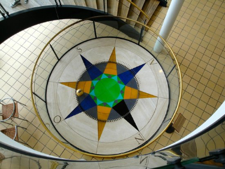

MEDICINHISTORIE-QUIZ
Når vi får en behandling hos lægen eller tandlægen, eller bliver opereret på sygehuset ligger der årtiers og nogle gange århundreders opdagelser og forskning bag. I udstillingen om medicinhistoriens værksteder, kan du opleve nogle af sundhedsvæsenets værksteder, som de så ud for 50-100 år siden. Udstillingen er en interiør udstilling og har 4 medicinske rum fra det 20. århundrede, som hver især afspejler udviklingen og forståelsen af den medicinske verden på sin tid. Udstillingen består af en operationsstue, tandlægeklinik, klinikken for en praktiserende læge og en røngtenklinik.
Bliv naturvidenskabens Einstein, og vis alle dine venner, hvor sej en quizzer du er! Rundt på den medicinhistoriske udstilling har vi gemt fem QR-koder, som du skal finde og scanne ind. På skærmen vil der poppe en video/lyd op, som fortæller en spændende historie - nu er det vigtigt at lytte godt efter, for bagefter er det tid til at svare på spørgsmål. Svarer du forkert, får du ingen point, men svarer du derimod rigtigt, er der point i sigte og muligheden for at blive museets bedste til medicinsk historie.